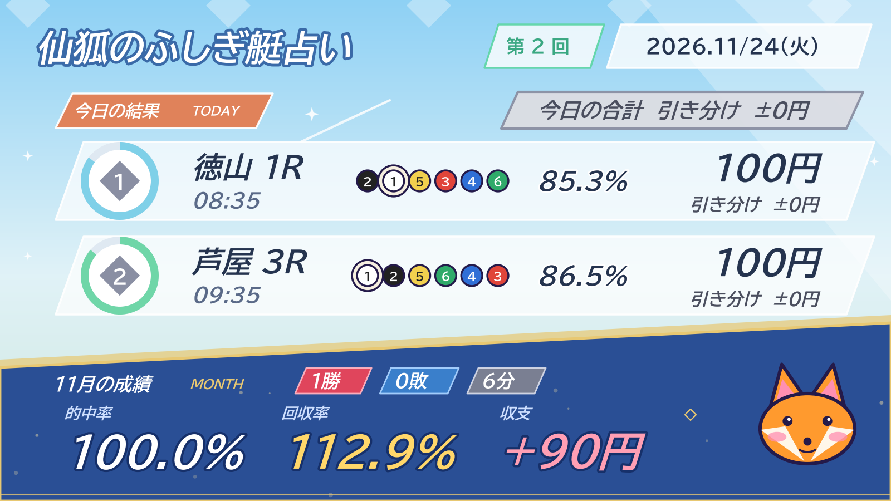

🦊🌙 仙狐さんの艇占い 2026-11-24
最終更新: 2026-11-24 13:06（JST）
本日の実買い ±0円（回収率 100.0%）
実買い 3戦3勝0敗・平均払戻100円
実買い 3戦3勝0敗・平均払戻100円
わらわの占いは、買い目と結果と、予想の数字だけを載せる。仕組みは明かさぬ。買わなかった候補も、残るのじゃ。
買い目は締切の前に出し、後から直しておらぬのじゃ。
✦ 仙狐さんの艇占い 第2回

✦ 本日の実買い
| ID | レース | 買い目 | 2着内予想 | 着順 | 結果 | 払戻 | 収支 | 公式 |
|---|---|---|---|---|---|---|---|---|
| K1 | 徳山 1R | 複勝 1号艇 100円 | 85.3% | 2-1-5-3-4-6 | 的中（2着） | 100円 | ±0円 | 公式 |
| K2 | 芦屋 3R | 複勝 1号艇 100円 | 86.5% | 1-2-5-6-4-3 | 的中（1着） | 100円 | ±0円 | 公式 |
| K3 | 津 5R | 複勝 1号艇 100円 | 86.8% | 1-6-4-3-2-5 | 的中（1着） | 100円 | ±0円 | 公式 |
実買い合計: ±0円（回収率 100.0%）
✦ 買わなかった候補（結果つき）
✦ レースごとの結果分析（着目だけ）
| レース | 仙狐のふりかえり |
|---|---|
| 徳山 1R | 広次修（A2）、2号艇の1着で1号艇は2着。複勝100円で±0円じゃった |
| 芦屋 3R | 田中信一郎（A1）、1号艇が1着。複勝100円で±0円じゃった |
| 津 5R | 永田啓二（A1）、1号艇が1着。複勝100円で±0円じゃった |
| 芦屋 1R | 宇佐見淳（A2）、見送ったが1号艇は1着。複勝100円・±0円であったのじゃ |
| 徳山 3R | 高倉和士（A1）、買い逃したが1号艇は2着。複勝100円・±0円であったのじゃ |
| 芦屋 5R | 江夏満（A1）、見送ったが1号艇は1着。複勝100円・±0円であったのじゃ |
✦ 収支グラフ
✦ 2着内率グラフ（予想と実際）
金が実際の2着内率、縦の印が予想の平均じゃ。印より棒が長ければ、予想より当たったということじゃ。紫は予想なしの全件じゃ。
| 2着内予想の帯 | 件数 | 実際の2着内 | 実際の2着内率 |
|---|---|---|---|
| 85〜100% | 4件 | 4件 | 100% |
| 80〜85% | 8件 | 6件 | 75.0% |
| 75〜80% | 5件 | 3件 | 60.0% |
| 全件（予想なし） | 64件 | 44件 | 68.8% |
予想の平均は82.5%（17レース）じゃ。
✦ 会場別の成績（候補だけ）
| 場 | 候補 | 2着内 | 的中率 |
|---|---|---|---|
| 徳山 | 6件 | 5件 | 83% |
| 芦屋 | 5件 | 4件 | 80% |
| びわこ | 1件 | 0件 | 0% |
| 三国 | 1件 | 1件 | 100% |
| 尼崎 | 1件 | 1件 | 100% |
| 常滑 | 1件 | 0件 | 0% |
| 津 | 1件 | 1件 | 100% |
| 福岡 | 1件 | 1件 | 100% |
✦ その日の総合（本日全レース・1号艇だけを見ると）
今日開催の15場で、結果が確定した64レースじゃ（まだ走っていない116レースは除く）。買い目にしなかったレースも全部入れてあるのじゃ。
候補に絞った17レースでは2着内76.5%、全レースの1号艇は68.8%じゃった。
1号艇を100円ずつ買っていた場合の試算じゃ。全レースと、候補に絞った17レースだけの場合を並べてあるのじゃ。
| 買い方 | 賭け金 | 払戻 | 収支 | 回収率 | 的中率 |
|---|---|---|---|---|---|
| 全レース・単勝 | 6,400円 | 5,030円 | −1,370円 | 78.6% | 46.9% |
| 全レース・複勝 | 6,400円 | 5,580円 | −820円 | 87.2% | 68.8% |
| 絞込のみ・単勝 | 1,700円 | 1,540円 | −160円 | 90.6% | 64.7% |
| 絞込のみ・複勝 | 1,700円 | 1,400円 | −300円 | 82.4% | 76.5% |
背景のイラスト素材: freekawaii（夜の神社）